../vignettes/organisations_with_ggraph.Rmd
organisations_with_ggraph.RmdThis vignette demonstrates the basic principles of how organisational data can be analysed and visualised using the ggraph and tidygraph packages. Although the orgsurveyr package provides some convenience functions to facilitate this, it is deliberately kept lightweight with the intention that core ggraph and tidygraph functionality is used instead. Having established the basic principles behind organisational data analyses, these convenience functions and classes are introduced.
A simple tree representing an organisation with three teams, each with three sub-teams can be simulated with tidygraph as follows:
tg <- tidygraph::create_tree(n = 13, children = 3)
tg
#> # A tbl_graph: 13 nodes and 12 edges
#> #
#> # A rooted tree
#> #
#> # Node Data: 13 x 0 (active)
#> #
#> # Edge Data: 12 x 2
#> from to
#> <int> <int>
#> 1 1 2
#> 2 1 3
#> 3 1 4
#> # ... with 9 more rowsThe network object is two data frames, one for the nodes and another for the edges.
The tidygraph object can be plotted as a dendrogram with ggraph:
ggraph(tg, 'dendrogram') + geom_edge_diagonal() +
geom_node_point(shape = 21, size = 5, fill = 'white') + theme_bw() 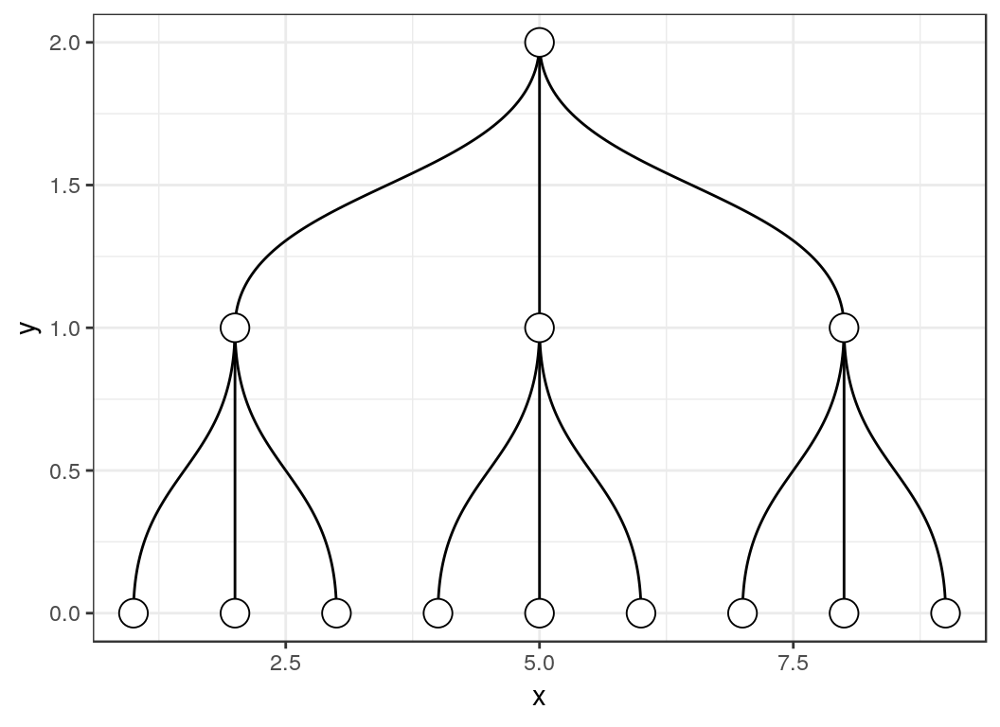
The tidygraph object can be accessed with familiar tidyverse syntax, using the activate verb to select either nodes or edges:
tg %>% activate(edges) %>% as_tibble()
#> # A tibble: 12 x 2
#> from to
#> <int> <int>
#> 1 1 2
#> 2 1 3
#> 3 1 4
#> 4 2 5
#> 5 2 6
#> 6 2 7
#> 7 3 8
#> 8 3 9
#> 9 3 10
#> 10 4 11
#> 11 4 12
#> 12 4 13A number of useful functions exist for calculating over and manipulating the network, and these can be combined with the conventional tidyverse verbs such as mutate and filter. For example, to calculate the depth within the network of each node, we can use the bfs_dist function:
tg <- tg %>%
mutate(depth = tidygraph::bfs_dist(1))
tg
#> # A tbl_graph: 13 nodes and 12 edges
#> #
#> # A rooted tree
#> #
#> # Node Data: 13 x 1 (active)
#> depth
#> <int>
#> 1 0
#> 2 1
#> 3 1
#> 4 1
#> 5 2
#> 6 2
#> # ... with 7 more rows
#> #
#> # Edge Data: 12 x 2
#> from to
#> <int> <int>
#> 1 1 2
#> 2 1 3
#> 3 1 4
#> # ... with 9 more rowsOverlaying this new variable onto the network is as would be expected in any ggplot:
ggraph(tg, 'dendrogram') + geom_edge_diagonal() +
geom_node_point(aes(fill = depth), shape = 21, size = 5) + theme_bw() 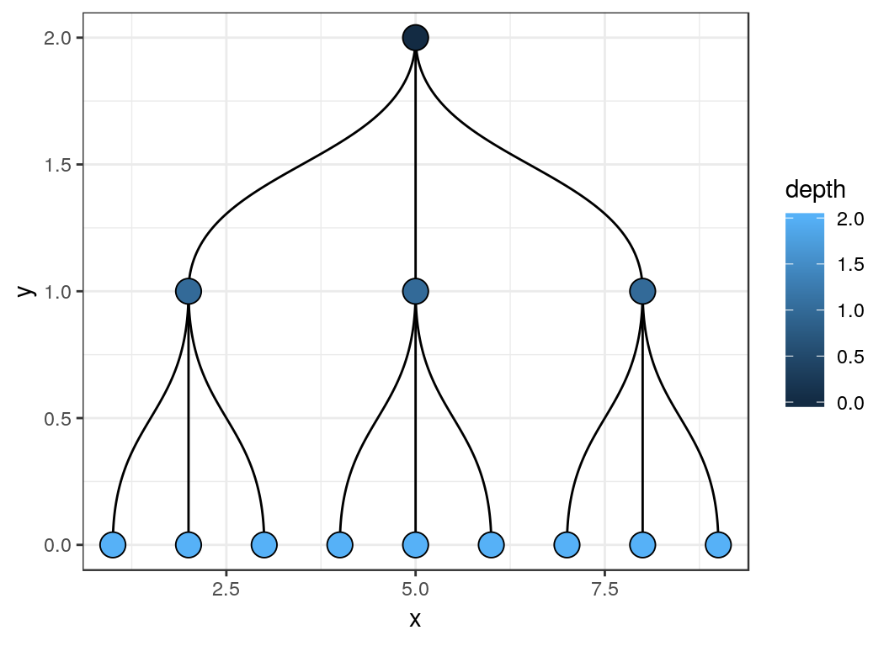
For more information about how tidygraph represents networks see this blog post.
To create a larger organisation, we can modify the number of nodes in the tree and the maximum number of children per node.
bigger_org <- tidygraph::create_tree(n = 40, children = 4)
ggraph(bigger_org, 'dendrogram') + geom_edge_diagonal() +
geom_node_point(shape = 21, size = 2, fill = 'white') + theme_bw() 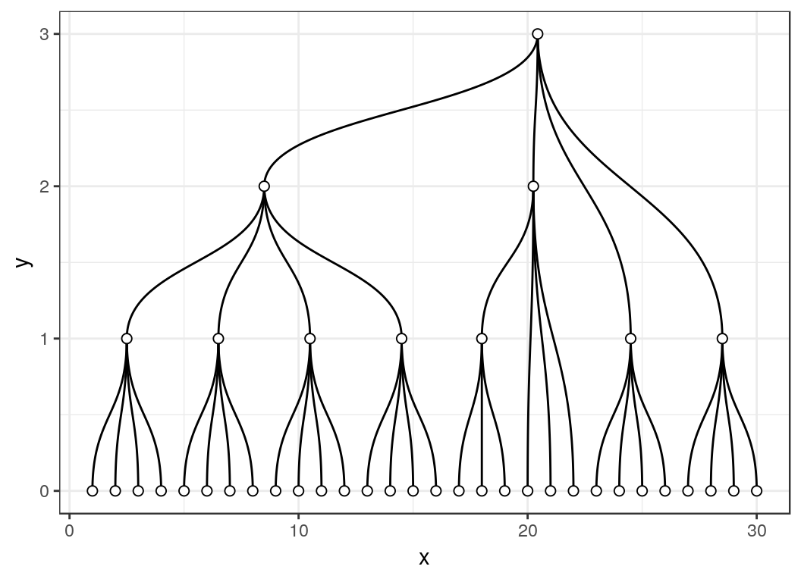
To create a more symmetrical organisation, use the formula below:
n_children <- 4
max_depth <- 3
regular_n <- sum(n_children^c(0:max_depth))
regular_org <- tidygraph::create_tree(n = regular_n, children = n_children)
ggraph(regular_org, 'dendrogram') + geom_edge_diagonal() +
geom_node_point(shape = 21, size = 2, fill = 'white') + theme_bw() 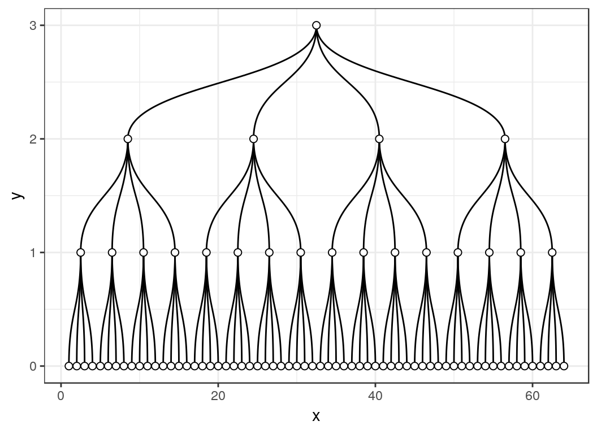
The orgsurvey::create_regular_org function provides a wrapper around this approach:
create_regular_org(n_children = 5, max_depth = 2) %>%
ggraph('dendrogram') + geom_edge_diagonal() +
geom_node_point(shape = 21, size = 2, fill = 'white') + theme_bw() 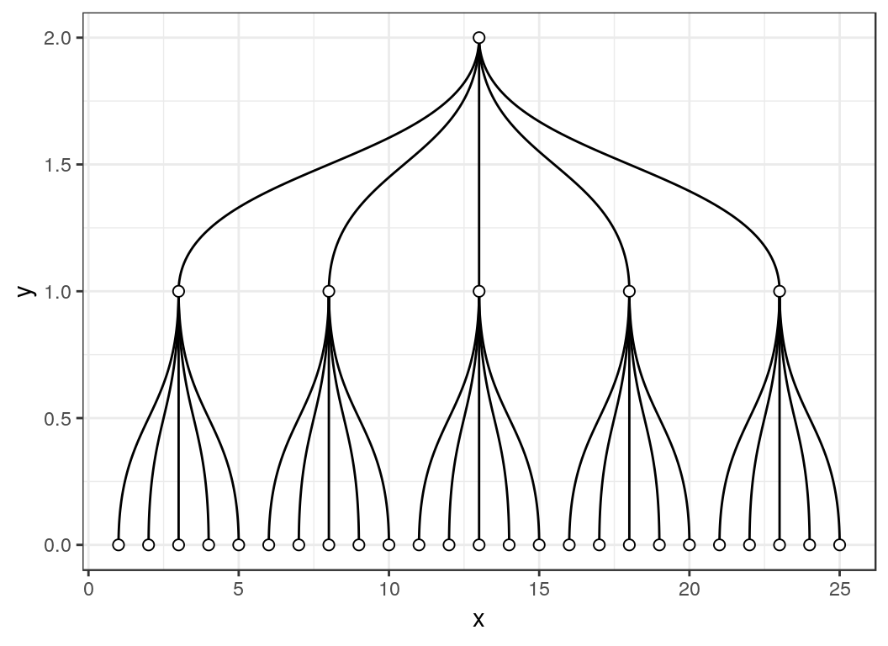
To create a more realistic and less regular, symmetrical organisation, there are two basic approaches: to either build the network up, or trim an existing network down. In the orgsurveyr package the latter approach is taken. The actions are:
To randomly select nodes for deletion, a new variable can be created in the nodes data frame that uses the rbinom function to assign a deletion status of true with a probability of 0.3. Note that the .N() function is used to access the nodes data frame within a tidygraph object.
set.seed(1234)
tg_random_delete <- create_regular_org(4,2) %>%
mutate(branch_delete = rbinom(n = nrow(.N()), size = 1, prob = 0.3))
ggraph(tg_random_delete, 'dendrogram', circular = FALSE) + geom_edge_diagonal() +
geom_node_point(aes(fill = as.factor(branch_delete)), shape = 21, size = 4) +
theme_bw() + guides(fill = guide_legend(title = 'Branch Delete'))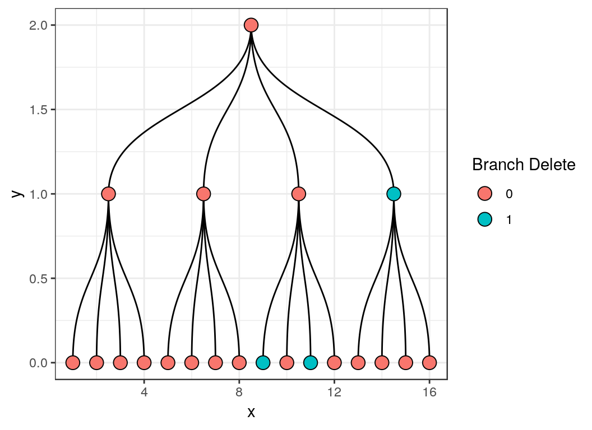
The next step is to assign all descendent nodes of a node marked as for deletion the same status. This can be done as follows:
tg_random_branch_delete <- tg_random_delete %>%
mutate(to_delete = tidygraph::map_bfs_dbl(1, .f = function(node, path, ...) {
max(.N()[c(node, path$node),]$branch_delete)
}))
tg_random_branch_delete %>%
ggraph('dendrogram') + geom_edge_diagonal() +
geom_node_point(aes(fill = as.factor(to_delete)), shape = 21, size = 4) +
theme_bw() + guides(fill = guide_legend(title = 'To Delete'))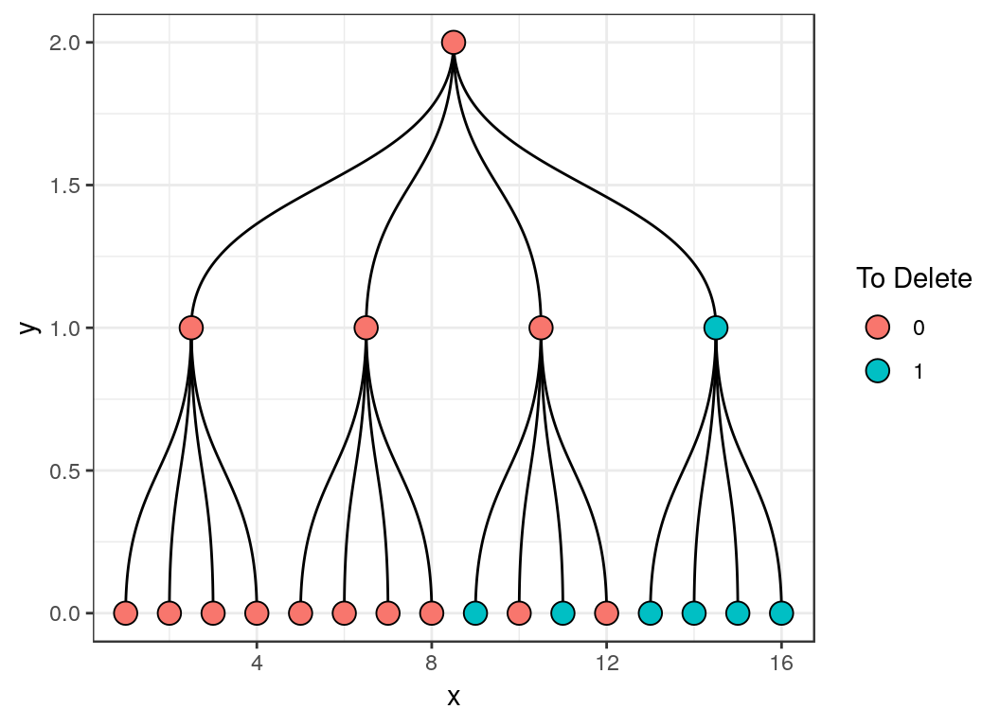
The map_bfs_dbl function allows us to access the nodes between the current node and the root node and identify whether any already have already been marked for deletion. The effect can be seen in the plot, where all four of the leaf nodes in the right hand branch have now been marked for deletion.
Deleting nodes is completed using familiar dplyr verbs:
tg_random_branch_delete <- tg_random_branch_delete %>%
filter(to_delete != 1)
#plot
tg_random_branch_delete %>%
ggraph('dendrogram') + geom_edge_diagonal() +
geom_node_point(aes(fill = as.factor(to_delete)), shape = 21, size = 4) +
theme_bw() + guides(fill = guide_legend(title = 'To Delete'))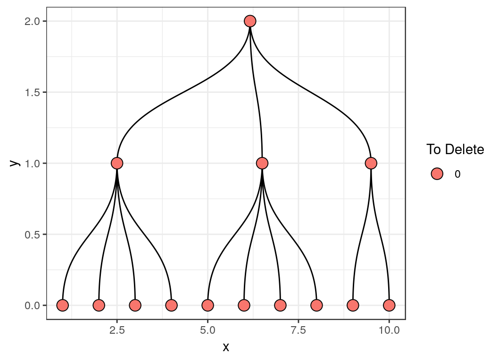
In the example above, any node was given the same chance of being deleted. In reality we may wish to have a difference chance of a node being deleted depending on its depth in the organisation. This can be achieved by first calculating the depth of the organisation using the bfs_dist function, and then either applying some function to this or joining another data frame with the required probabilities.
The first example demonstrates how simple function can be used to translate depth to likelihood of deletion. Nodes to be deleted are highlighted in red.
set.seed(1234)
tg_trim_by_depth_function <- create_regular_org(4, 3) %>%
mutate(depth = bfs_dist(1),
prob_deletion = 1 - (8 - depth) / 8,
branch_delete = rbinom(nrow(.N()), 1, prob_deletion),
to_delete = tidygraph::map_bfs_dbl(1, .f = function(node, path, ...) {
max(.N()[c(node, path$node), ]$branch_delete)
}))
tg_trim_by_depth_function
#> # A tbl_graph: 85 nodes and 84 edges
#> #
#> # A rooted tree
#> #
#> # Node Data: 85 x 4 (active)
#> depth prob_deletion branch_delete to_delete
#> <int> <dbl> <int> <int>
#> 1 0 0 0 0
#> 2 1 0.125 0 0
#> 3 1 0.125 0 0
#> 4 1 0.125 0 0
#> 5 1 0.125 0 0
#> 6 2 0.25 1 1
#> # ... with 79 more rows
#> #
#> # Edge Data: 84 x 2
#> from to
#> <int> <int>
#> 1 1 2
#> 2 1 3
#> 3 1 4
#> # ... with 81 more rows
tg_trim_by_depth_function %>%
ggraph('dendrogram', circular = TRUE) + geom_edge_diagonal() +
geom_node_point(aes(fill = prob_deletion, color = as.factor(to_delete)),
shape = 21, size = 4, stroke = 1) +
scale_color_manual(values = c('0' = 'black', '1' = 'red')) +
theme_bw()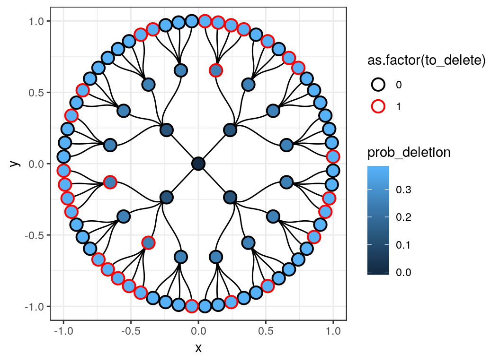
Second, join to a data frame containing the probabilities defined exactly.
set.seed(1234)
tg_trim_by_depth_exact <- create_regular_org(4,3) %>%
mutate(depth = bfs_dist(1)) %>%
inner_join(data_frame(depth = 0:4,
prob_deletion = c(0, 0.1, 0.2, 0.3, 0.4)), by = 'depth') %>%
mutate(branch_delete = rbinom(nrow(.N()),1,prob_deletion),
to_delete = tidygraph::map_bfs_dbl(1, .f = function(node, path, ...) {
max(.N()[c(node, path$node),]$branch_delete)
}))
tg_trim_by_depth_exact
#> # A tbl_graph: 85 nodes and 84 edges
#> #
#> # A rooted tree
#> #
#> # Node Data: 85 x 4 (active)
#> depth prob_deletion branch_delete to_delete
#> <int> <dbl> <int> <int>
#> 1 0 0 0 0
#> 2 1 0.1 0 0
#> 3 1 0.1 0 0
#> 4 1 0.1 0 0
#> 5 1 0.1 0 0
#> 6 2 0.2 1 1
#> # ... with 79 more rows
#> #
#> # Edge Data: 84 x 2
#> from to
#> <int> <int>
#> 1 1 2
#> 2 1 3
#> 3 1 4
#> # ... with 81 more rows
tg_trim_by_depth_exact %>%
ggraph('dendrogram', circular = TRUE) + geom_edge_diagonal() +
geom_node_point(aes(fill = prob_deletion, color = as.factor(to_delete)),
shape = 21, size = 4, stroke = 1) +
scale_color_manual(values = c('0' = 'black', '1' = 'red')) +
theme_bw()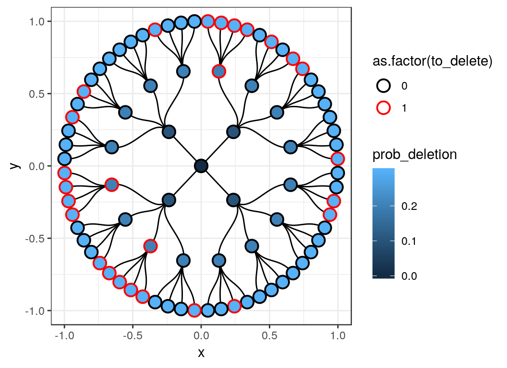
Either of the above networks can be trimmed and plotted as a reasonable simulation of an organisation:
tg_complex <- tg_trim_by_depth_function %>%
filter(to_delete == 0)
tg_complex %>%
ggraph('dendrogram', circular = TRUE) + geom_edge_diagonal() +
geom_node_point(shape = 21, size = 4, fill = 'white') +
theme_bw()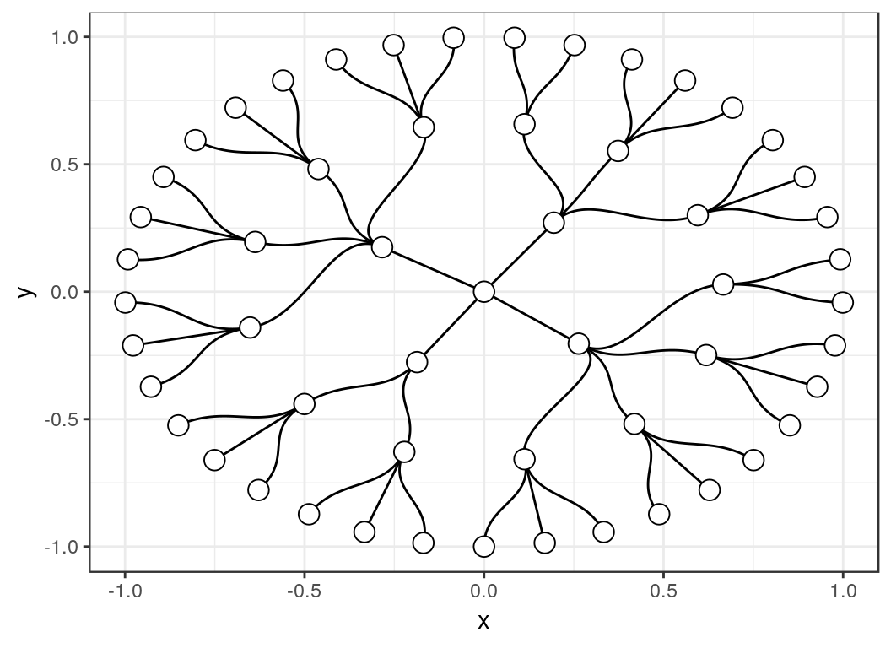
Having simulated the organisation, we now want to simulate the people within the organisation. It’s the people and what they are doing and saying that we are interested in after all!
Organisational units within the organisation will have different numbers of people associated with them. Generally, the leaf nodes will have more people, whereas nodes higher up the organisation will have fewer people directly associated with them. This is because there will likely only be one manager and perhaps a secretary or a senior person with no further line management responsibility at a non-leaf node. The leaf nodes, by contrast, will have a number of people with no further line management responsibilities associated with them.
Since we don’t want all organisational units to have the same number of people associated with them, let’s define a function to simulate the size of the group whether it is a leaf node or not:
sim_group_size <- function(is_leaf_node) {
if (is_leaf_node) {
ceiling(rbeta(1, 10, 40) * 20)
} else {
sample(1:3, 1)
}
}If the group is a leaf node, then the group size will be simulated from the beta distribution, whereas if it isn’t then it will be a number between 1 and 3.
Let’s simulate 10000 groups and see how they are distributed, using the purrr::map function to apply our function 10,000 times:
set.seed(1337)
data_frame(status = rbinom(10000, 1, 0.5)) %>%
mutate(x = purrr::map_dbl(status, sim_group_size)) %>%
ggplot(aes(x)) + geom_bar() + facet_wrap(~as.factor(status)) + theme_bw()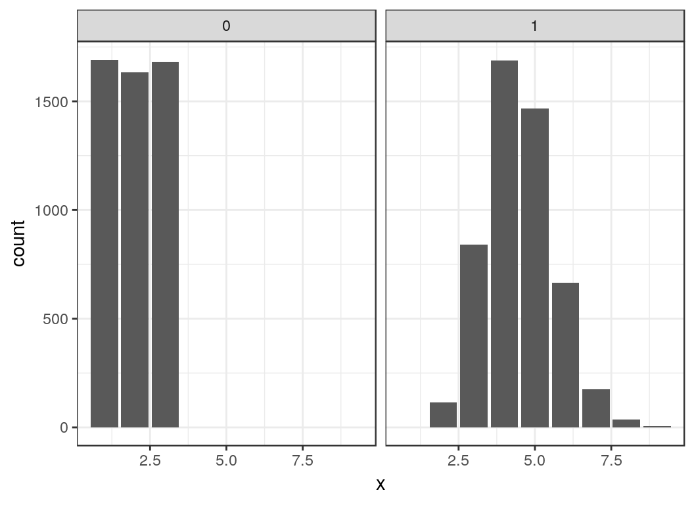
The sim_group_size function can be applied to the nodes data frame in the tbl_graph object as if it were a data frame:
tg_group_size <- tg_complex %>%
mutate(unit_id = dplyr::row_number(),
is_leaf = node_is_leaf(),
unit_size = purrr::map_dbl(is_leaf, sim_group_size))
tg_group_size
#> # A tbl_graph: 55 nodes and 54 edges
#> #
#> # A rooted tree
#> #
#> # Node Data: 55 x 7 (active)
#> depth prob_deletion branch_delete to_delete unit_id is_leaf unit_size
#> <int> <dbl> <int> <int> <int> <lgl> <dbl>
#> 1 0 0 0 0 1 FALSE 2
#> 2 1 0.125 0 0 2 FALSE 2
#> 3 1 0.125 0 0 3 FALSE 1
#> 4 1 0.125 0 0 4 FALSE 1
#> 5 1 0.125 0 0 5 FALSE 2
#> 6 2 0.25 0 0 6 FALSE 2
#> # ... with 49 more rows
#> #
#> # Edge Data: 54 x 2
#> from to
#> <int> <int>
#> 1 1 2
#> 2 1 3
#> 3 1 4
#> # ... with 51 more rowsTo visualise the group sizes, we can plot them as node labels:
tg_group_size %>%
ggraph('dendrogram', circular = TRUE) + geom_edge_diagonal() +
geom_node_point(shape = 21, size = 6, fill = 'white') +
geom_node_text(aes(label = unit_size)) +
theme_bw()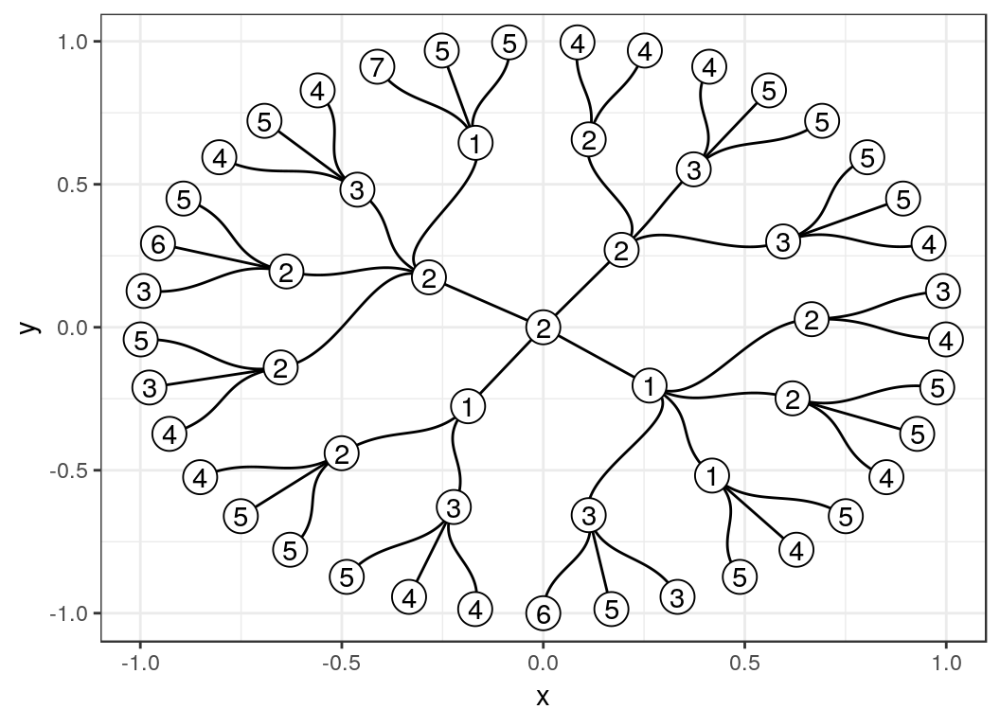
Now that we have determined how many people should be in each group, we can simulate them. Essentially we need a new data frame with one row per person, rather than one row per organisational unit. There are a variety of ways of doing this, the below example uses purrr::map and tidyr::unnest to simulate an individual level variable with mean of 10 and standard deviation of 3:
tg_individuals_df <- tg_group_size %>%
activate(nodes) %>%
as_tibble() %>%
dplyr::select(unit_id, unit_size, depth, is_leaf) %>%
dplyr::mutate(var1 = purrr::map(unit_size, ~rnorm(., mean=10, sd=3))) %>%
tidyr::unnest()
tg_individuals_df
#> # A tibble: 205 x 5
#> unit_id unit_size depth is_leaf var1
#> <int> <dbl> <int> <lgl> <dbl>
#> 1 1 2 0 FALSE 4.52
#> 2 1 2 0 FALSE 11.3
#> 3 2 2 1 FALSE 6.51
#> 4 2 2 1 FALSE 12.0
#> 5 3 1 1 FALSE 10.8
#> 6 4 1 1 FALSE 11.7
#> 7 5 2 1 FALSE 4.48
#> 8 5 2 1 FALSE 11.6
#> 9 6 2 2 FALSE 16.5
#> 10 6 2 2 FALSE 4.30
#> # ... with 195 more rowsTo plot the individual level data on the network plot, we first summarise it as the group level and then join it back into the nodes data frame of the network:
#now calculate means and put info back into network plot
tg_var1_df <- tg_individuals_df %>%
group_by(unit_id) %>%
summarise(var1 = mean(var1))
#merge in summarised data
tg_var1 <- tg_group_size %>%
inner_join(tg_var1_df, by = 'unit_id')
tg_var1
#> # A tbl_graph: 55 nodes and 54 edges
#> #
#> # A rooted tree
#> #
#> # Node Data: 55 x 8 (active)
#> depth prob_deletion branch_delete to_delete unit_id is_leaf unit_size
#> <int> <dbl> <int> <int> <int> <lgl> <dbl>
#> 1 0 0 0 0 1 FALSE 2
#> 2 1 0.125 0 0 2 FALSE 2
#> 3 1 0.125 0 0 3 FALSE 1
#> 4 1 0.125 0 0 4 FALSE 1
#> 5 1 0.125 0 0 5 FALSE 2
#> 6 2 0.25 0 0 6 FALSE 2
#> # ... with 49 more rows, and 1 more variable: var1 <dbl>
#> #
#> # Edge Data: 54 x 2
#> from to
#> <int> <int>
#> 1 1 2
#> 2 1 3
#> 3 1 4
#> # ... with 51 more rows
#plot as a network
tg_var1 %>%
ggraph('dendrogram', circular = TRUE) + geom_edge_diagonal() +
geom_node_point(aes(fill = var1), shape = 21, size = 4) 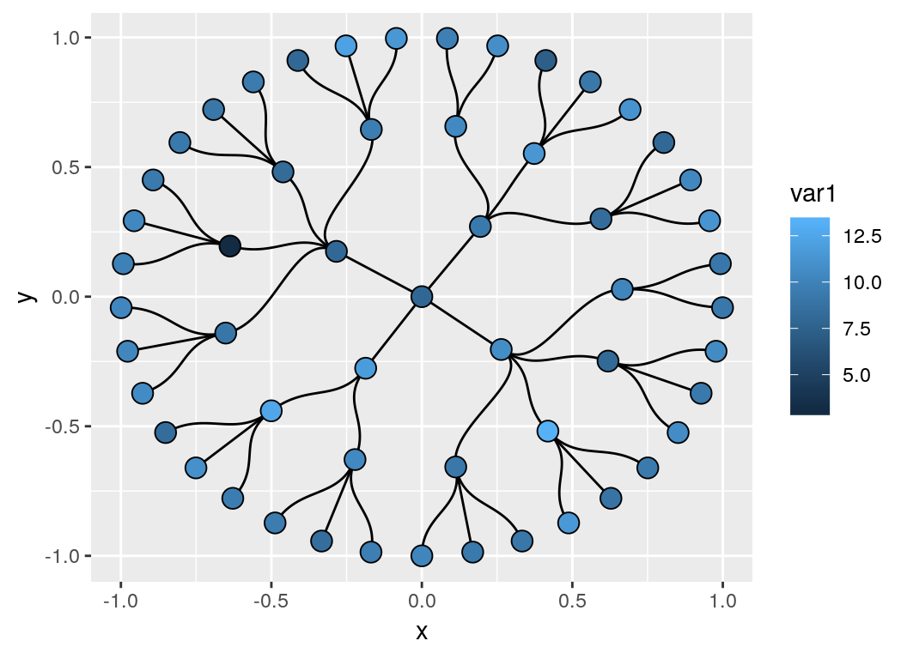
Often we don’t necessarily want to know the mean for just the people directly associated with an organisational unit, but the mean for all people associated with the current unit and its children.
What is required is a data frame that maps each unit with all of the units below it in the hierarchy. This can be achieved using the functionality of the tidygraph::map_bfs_back function in a similar way to how we propagated deletion status through the tree:
tg_expanded_df <- tg_group_size %>%
mutate(child_id = tidygraph::map_bfs_back(unit_id, .f = function(node, path, ...) {
.N()[c(node, path$node),]$unit_id
})) %>%
activate(nodes) %>%
as_tibble() %>%
dplyr::transmute(parent_id = unit_id, unit_id = child_id) %>%
tidyr::unnest() %>%
arrange(parent_id)
tg_expanded_df
#> # A tibble: 196 x 2
#> parent_id unit_id
#> <int> <int>
#> 1 1 1
#> 2 1 2
#> 3 1 3
#> 4 1 4
#> 5 1 5
#> 6 1 6
#> 7 1 7
#> 8 1 8
#> 9 1 9
#> 10 1 10
#> # ... with 186 more rowsWe now need to join our individuals data frame with the cumulative mapping data frame, calculate our cumulative variables and then join the result back into the tidygraph object.
First calculate the cumulative variables:
tg_cumulative_df <- tg_expanded_df %>%
inner_join(tg_individuals_df, by = 'unit_id') %>%
group_by(parent_id) %>%
summarise(cumulative_group_size = n(),
cumulative_var1_mean = mean(var1))
tg_cumulative_df
#> # A tibble: 55 x 3
#> parent_id cumulative_group_size cumulative_var1_mean
#> <int> <int> <dbl>
#> 1 1 205 9.68
#> 2 2 46 9.73
#> 3 3 58 9.78
#> 4 4 33 9.79
#> 5 5 66 9.55
#> 6 6 10 10.3
#> 7 7 17 9.68
#> 8 8 17 9.50
#> 9 9 9 9.39
#> 10 10 16 9.85
#> # ... with 45 more rowsNow merge back into the network object:
tg_cumulative <- tg_var1 %>%
select(unit_id, depth, is_leaf, unit_size, var1) %>%
inner_join(tg_cumulative_df, by = c('unit_id' = 'parent_id'))
tg_cumulative
#> # A tbl_graph: 55 nodes and 54 edges
#> #
#> # A rooted tree
#> #
#> # Node Data: 55 x 7 (active)
#> unit_id depth is_leaf unit_size var1 cumulative_group… cumulative_var1…
#> <int> <int> <lgl> <dbl> <dbl> <int> <dbl>
#> 1 1 0 FALSE 2 7.92 205 9.68
#> 2 2 1 FALSE 2 9.25 46 9.73
#> 3 3 1 FALSE 1 10.8 58 9.78
#> 4 4 1 FALSE 1 11.7 33 9.79
#> 5 5 1 FALSE 2 8.02 66 9.55
#> 6 6 2 FALSE 2 10.4 10 10.3
#> # ... with 49 more rows
#> #
#> # Edge Data: 54 x 2
#> from to
#> <int> <int>
#> 1 1 2
#> 2 1 3
#> 3 1 4
#> # ... with 51 more rowsAnd finally plot - coloured by cumulative mean of the simulated variable, and labelled by cumulative unit size:
tg_cumulative %>%
ggraph('dendrogram', circular = TRUE) + geom_edge_diagonal() +
geom_node_point(aes(fill = cumulative_var1_mean), shape = 21, size = 6) +
geom_node_text(aes(label = cumulative_group_size), color = 'white', size = 3) +
theme_bw()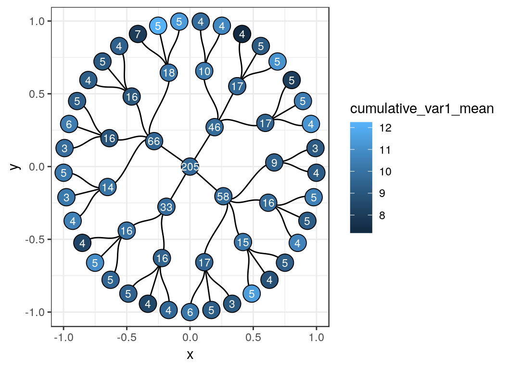
In this analysis we have simulated basic organisations, made them more complex by trimming, and then simulated individual level data which we have summarised both at immediate group level and cumulative group level. Simulation of more complex variables is possible, for example introducing group level effects or adding additional structure into the organisation.